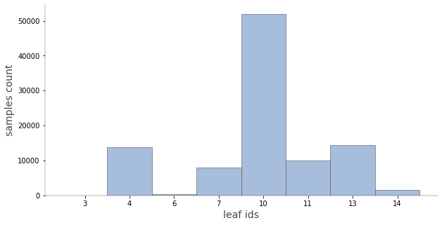
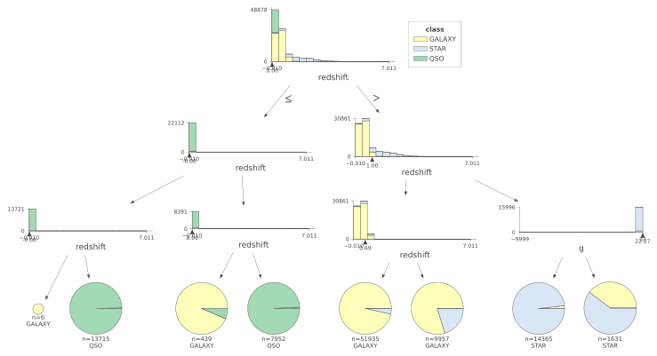
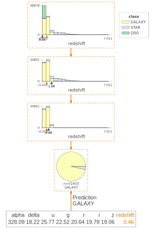

Don’t include: * plate ID, identifies each plate in SDSS * Unique ID used for optical spectroscopic objects (this means that 2 different observations with the same spec_obj_ID must share the output class) * Field number to identify each field * Camera column to identify the scanline within the run * Rerun Number to specify how the image was processed * Run Number used to identify the specific scan * Object Identifier, the unique value that identifies the object in the image catalog used by the CAS * MJD = Modified Julian Date, used to indicate when a given piece of SDSS data was taken
Code
df = pd.read_csv("star_classification.csv")#just manually remove all ID-type columns, and classfeatures = ['alpha','delta','u','g','r','i','z','redshift']X = df[features]y = df['class']le = LabelEncoder()y = le.fit_transform(y)
tpot_config['tpot.builtins.FeatureSetSelector'] = {'subset_list': ['https://raw.githubusercontent.com/EpistasisLab/tpot/master/tests/subset_test.csv'],'sel_subset': [0,1] # select only one feature set, a list of index of subset in the list above#'sel_subset': list(combinations(range(3), 2)) # select two feature sets}
Code
X_train, X_test, y_train, y_test = train_test_split(X, y, train_size=0.75, test_size=0.25, random_state=42)
5.01 minutes have elapsed. TPOT will close down.
TPOT closed during evaluation in one generation.
WARNING: TPOT may not provide a good pipeline if TPOT is stopped/interrupted in a early generation.
TPOT closed prematurely. Will use the current best pipeline.
Best pipeline: DecisionTreeClassifier(DecisionTreeClassifier(input_matrix, criterion=entropy, max_depth=10, min_samples_leaf=19, min_samples_split=18), criterion=entropy, max_depth=3, min_samples_leaf=5, min_samples_split=10)
/usr/local/lib/python3.7/dist-packages/ipykernel_launcher.py:2: DeprecationWarning: `np.float` is a deprecated alias for the builtin `float`. To silence this warning, use `float` by itself. Doing this will not modify any behavior and is safe. If you specifically wanted the numpy scalar type, use `np.float64` here.
Deprecated in NumPy 1.20; for more details and guidance: https://numpy.org/devdocs/release/1.20.0-notes.html#deprecations
[WARNING] [2022-08-09 23:43:03,900:matplotlib.font_manager] findfont: Font family ['Arial'] not found. Falling back to DejaVu Sans.

Code
trees.dtreeviz(sk_dtree)
[WARNING] [2022-08-09 23:43:50,124:matplotlib.font_manager] findfont: Font family ['Arial'] not found. Falling back to DejaVu Sans.
[WARNING] [2022-08-09 23:43:50,353:matplotlib.font_manager] findfont: Font family ['Arial'] not found. Falling back to DejaVu Sans.
[WARNING] [2022-08-09 23:43:50,369:matplotlib.font_manager] findfont: Font family ['Arial'] not found. Falling back to DejaVu Sans.
/usr/local/lib/python3.7/dist-packages/numpy/core/fromnumeric.py:3208: VisibleDeprecationWarning: Creating an ndarray from ragged nested sequences (which is a list-or-tuple of lists-or-tuples-or ndarrays with different lengths or shapes) is deprecated. If you meant to do this, you must specify 'dtype=object' when creating the ndarray.
return asarray(a).size
/usr/local/lib/python3.7/dist-packages/matplotlib/cbook/__init__.py:1376: VisibleDeprecationWarning: Creating an ndarray from ragged nested sequences (which is a list-or-tuple of lists-or-tuples-or ndarrays with different lengths or shapes) is deprecated. If you meant to do this, you must specify 'dtype=object' when creating the ndarray.
X = np.atleast_1d(X.T if isinstance(X, np.ndarray) else np.asarray(X))
[WARNING] [2022-08-09 23:43:51,615:matplotlib.font_manager] findfont: Font family ['Arial'] not found. Falling back to DejaVu Sans.

Code
trees.dtreeviz(sk_dtree, fancy=False)
Code
trees.dtreeviz(sk_dtree, show_just_path=True, X = X.iloc[10])
/usr/local/lib/python3.7/dist-packages/numpy/core/fromnumeric.py:3208: VisibleDeprecationWarning: Creating an ndarray from ragged nested sequences (which is a list-or-tuple of lists-or-tuples-or ndarrays with different lengths or shapes) is deprecated. If you meant to do this, you must specify 'dtype=object' when creating the ndarray.
return asarray(a).size
/usr/local/lib/python3.7/dist-packages/matplotlib/cbook/__init__.py:1376: VisibleDeprecationWarning: Creating an ndarray from ragged nested sequences (which is a list-or-tuple of lists-or-tuples-or ndarrays with different lengths or shapes) is deprecated. If you meant to do this, you must specify 'dtype=object' when creating the ndarray.
X = np.atleast_1d(X.T if isinstance(X, np.ndarray) else np.asarray(X))

Code
trees.viz_leaf_criterion(clf)
Code
trees.describe_node_sample(sk_dtree, node_id=10)
alpha
delta
u
g
r
i
z
redshift
count
51935.000000
51935.000000
51935.000000
51935.000000
51935.000000
51935.000000
51935.000000
51935.000000
mean
181.711450
24.074552
22.346448
20.536128
19.210662
18.515720
18.135271
0.355549
std
91.416751
19.351312
2.327826
2.027503
1.723310
1.536114
1.502448
0.203380
min
0.005528
-12.364701
13.897990
12.679020
11.746640
11.299560
10.897380
0.004285
25%
134.238282
6.283251
20.344025
18.611765
17.660465
17.226380
16.926995
0.145027
50%
187.270126
22.799320
22.584700
21.159340
19.592490
18.855040
18.436680
0.387110
75%
231.975632
38.773742
24.060300
22.144885
20.597755
19.655370
19.214630
0.534749
max
359.994125
74.459854
29.325650
29.862580
29.571860
29.889210
29.383740
0.685050
Code
pred_path = X.iloc[10]pred_path
alpha 328.092076
delta 18.220310
u 25.771630
g 22.520420
r 20.638840
i 19.780710
z 19.057650
redshift 0.459596
Name: 10, dtype: float64